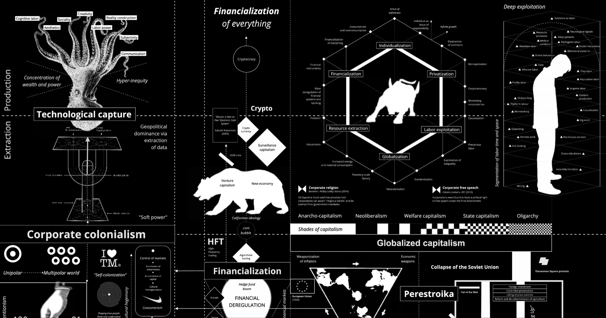
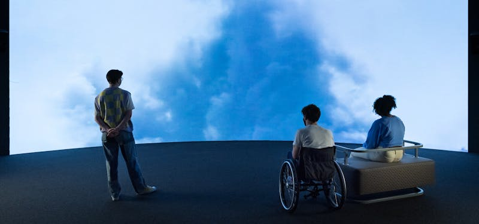
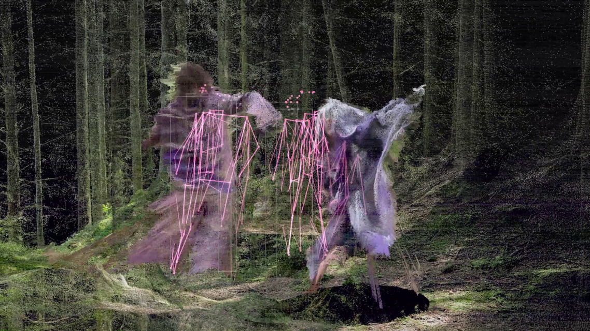

Projection
Infrastructure arrives first as a forecast, a model, a promise, or a threat.
Demand is not simply discovered. Institutions translate uncertain futures into capacities, corridors, resource claims, standards, and sites.
Research territory / working atlas
Infrastructure / projection / materiality / planetary systems
Speculations on Shared Infrastructural Life
A growing inquiry into the systems that make computation, settlement, circulation, and extraction appear distant from one another while binding them to shared grounds.
Territory in formation · 2026
Enter the fieldProjection
Infrastructure arrives first as a forecast, a model, a promise, or a threat.
Demand is not simply discovered. Institutions translate uncertain futures into capacities, corridors, resource claims, standards, and sites.
Materialization
The cloud touches ground as mine, cable, warehouse, server, substation, pipe, road, labor, heat, and waste.
Planetary computation is neither immaterial nor placeless. Its distance is maintained through a precise geography of extraction, logistics, maintenance, and concealment.
Parallax
The same system becomes a different object when seen by a utility, an investor, a sensor, a worker, a watershed, or a community.
Disagreement between representations is not only error. It reveals position, resolution, institutional purpose, and the limits of what each system can know.
Negotiation
Can a map hold incompatible obligations without converting them into one optimal answer?
The project searches for instruments that slow calculation, preserve the unknown, and make infrastructural decisions available for encounter and contestation.

A genealogy of classification, communication, computation, and control.
Visit project ↗
One domestic object opens onto planetary extraction, labor, logistics, and data.
Visit project ↗
Toxic residue becomes a material witness to electronic production.
Visit project ↗
Atmospheric traces become evidence through testimony, simulation, and sensing.
Visit project ↗
A narrative inhabits what machine vision excludes from the city.
Visit project ↗Planetary climate and land-use questions become a lived speculative world.
Visit project ↗